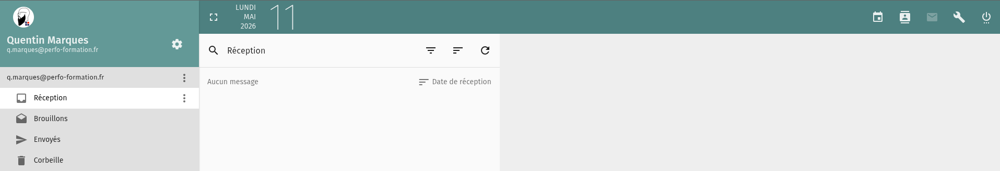

1. Accéder au portail webmail
Depuis AppPerfo
Connectez-vous à AppPerfo puis cliquez sur l’icône Mail.

Connexion au portail webmail
Cliquez sur le bouton Single Sign-On.
N’utilisez pas le formulaire classique sauf demande du support.

Activation automatique
Votre boîte mail est automatiquement créée lors de votre première connexion.
